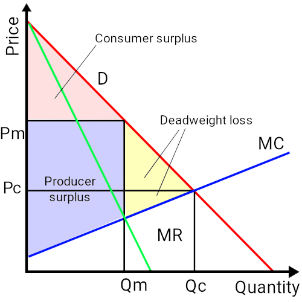
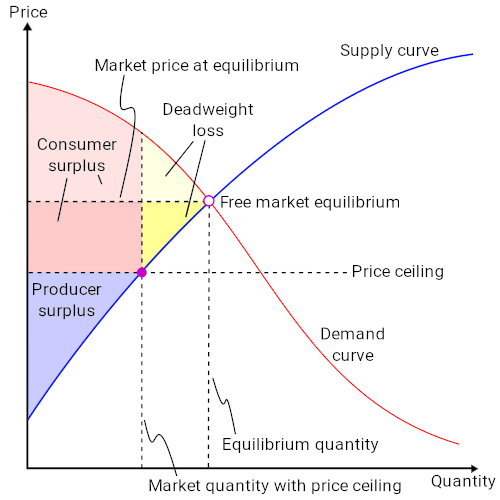
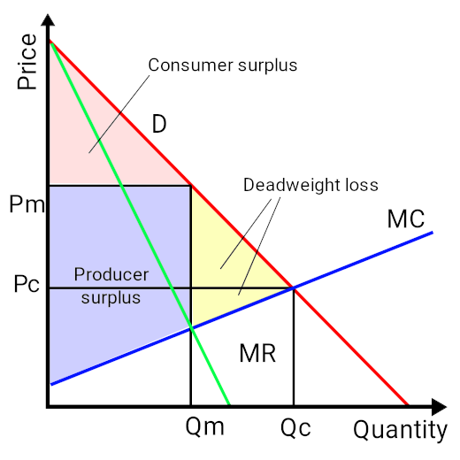

Table of Contents
11. Monopoly
11.1. Introduction to Monopoly
11.1.1. Defining Monopoly
11.2. Barriers to Entry: Reasons for Monopolies to Exist
11.2.1. Resource Control
11.2.2. Economies of Scale and Network Externalities
11.2.3. Government Action
11.2.4. Legal Barriers
11.2.5. Natural Monopolies
11.2.6. Other Barriers to Entry
11.3. Monopoly Production and Pricing Decisions and Profit Outcome
11.3.1. Market Differences Between Monopoly and Perfect Competition
11.3.2. Marginal Revenue and Marginal Cost Relationship for Monopoly Production
11.3.3. Profit Maximization Function for Monopolies
11.3.4. Monopoly Production Decision
11.3.5. Monopoly Price and Profit
11.4. Impacts of Monopoly on Efficiency
11.4.1 Reasons for Efficiency Loss
11.4.2 Understanding and Finding the Deadweight Loss
11.5. Price Discrimination
11.5.1. Elasticity Conditions for Price Discrimination
11.5.2. Analysis of Price Discrimination
11.5.3. Examples of Price Discrimination
11.6. Monopoly in Public Policy
11.6.1. Social Impacts of Monopoly
11.6.2. Antitrust Laws
11.6.3. Regulation of Natural Monopoly
11. Monopoly
11.1. Introduction to Monopoly
11.1.1. Defining Monopoly
A monopoly is an economic market structure where a specific person or enterprise is the only supplier of a particular good.
Learning Objective
Differentiate monopolies and competitive markets
Key Points
- A monopoly market is characterized by the profit maximizer, price maker, high barriers to entry, single seller, and price discrimination.
- Monopoly characteristics include profit maximizer, price maker, high barriers to entry, single seller, and price discrimination.
- Sources of monopoly power include economies of scale, capital requirements, technological superiority, no substitute goods, control of natural resources, legal barriers, and deliberate actions.
- There are a few similarities between a monopoly and competitive market: the cost functions are the same, both minimize cost and maximize profit, the shutdown decisions are the same, and both are assumed to have perfectly competitive market factors.
- Differences between the two market structures including: marginal revenue and price, product differentiation, number of competitors, barriers to entry, elasticity of demand, excess profits, profit maximization, and the supply curve.
- The most significant distinction is that a monopoly has a downward sloping demand instead of the "perceived" perfectly elastic curve of the perfectly competitive market.
Key Terms
- monopoly
- A market where one company is the sole supplier.
- differentiation
- The act of distinguishing a product from the others in the market.
A monopoly is a specific type of economic market structure. A monopoly exists when a specific person or enterprise is the only supplier of a particular good. As a result, monopolies are characterized by a lack of competition within the market producing a good or service .
{kind=link}
The graph shows a monopoly and the price (P) and change in price (P reg) as well as the output (Q) and output change (Q reg).
Characteristics of a Monopoly
A monopoly can be recognized by certain characteristics that set it aside from the other market structures:
- Profit maximizer: a monopoly maximizes profits. Due to the lack of competition a firm can charge a set price above what would be charged in a competitive market, thereby maximizing its revenue.
- Price maker: the monopoly decides the price of the good or product being sold. The price is set by determining the quantity in order to demand the price desired by the firm (maximizes revenue).
- High barriers to entry: other sellers are unable to enter the market of the monopoly.
- Single seller: in a monopoly one seller produces all of the output for a good or service. The entire market is served by a single firm. For practical purposes the firm is the same as the industry.
- Price discrimination: in a monopoly the firm can change the price and quantity of the good or service. In an elastic market the firm will sell a high quantity of the good if the price is less. If the price is high, the firm will sell a reduced quantity in an elastic market.
Sources of Monopoly Power
In a monopoly, specific sources generate the individual control of the market. Sources of power include:
- Economies of scale
- Capital requirements
- Technological superiority
- No substitute goods
- Control of natural resources
- Network externalities
- Legal barriers
- Deliberate actions
Monopoly vs. Competitive Market
Monopolies and competitive markets mark the extremes in regards to market structure. There are a few similarities between the two including: the cost functions are the same, both minimize cost and maximize profit, the shutdown decisions are the same, and both are assumed to have perfectly competitive market factors.
However, there are noticeable differences between the two market structures including: marginal revenue and price, product differentiation, number of competitors, barriers to entry, elasticity of demand, excess profits, profit maximization, and the supply curve. The most significant distinction is that a monopoly has a downward sloping demand instead of the "perceived" perfectly elastic curve of the perfectly competitive market.
11.2. Barriers to Entry: Reasons for Monopolies to Exist
11.2.1. Resource Control
Control over a natural resource that is critical to the production of a final good is one source of monopoly power.
Learning Objective
Explain the relationship between resource control and monopolies
Key Points
- Single ownership over a resource gives the owner the power to raise the market price of a good over marginal cost without losing customers to competitors.
- De Beers is a classic example of a monopoly based on a natural resource. De Beers had a lot of market power in the world market for diamonds over the course of the 20th century, keeping the price of diamonds high.
- In practice, monopolies rarely arise because of control over natural resources.
Key Terms
- market power
- The ability of a firm to profitably raise the market price of a good or service over marginal cost. A firm with total market power can raise prices without losing any customers to competitors.
- economic rent
- The portion of income paid to a factor of production in excess of its opportunity cost.
Control over natural resources that are critical to the production of a good is one source of monopoly power. Single ownership over a resource gives the owner of the resource the power to raise the market price of a good over marginal cost without losing customers to competitors. In other words, resource control allows the controller to charge economic rent. This is a classic outcome of imperfectly competitive markets.
A classic example of a monopoly based on resource control is De Beers . De Beers Consolidated Mines were founded in 1888 in South Africa as an amalgamation of a number of individual diamond mining operations. De Beers had a monopoly over the production of diamonds for most of the 20th century, and it used its dominant position to manipulate the international diamond market. It convinced independent producers to join its single channel monopoly. In instances when producers refused to join, De Beers flooded the market with diamonds similar to the ones they were producing. De Beers also purchased and stockpiled diamonds produced by other manufacturers in order to control prices through supply. The De Beers model changed at the turn of the 21st century, when diamond producers from Russia, Canada, and Australia started to distribute diamonds outside of the De Beers channel. The sale of diamonds also suffered from rising awareness about blood diamonds. De Beers' market share fell from as high as 90 percent in the 1980s to less than 40 percent in 2012.
For most of the 20th century, De Beers had monopoly power over the world market for diamonds.
In practice, monopolies rarely arise because of control over natural resources. Economies are large, usually with multiple people owning resources. International trade is an additional source of competition for owners of natural resources.
11.2.2. Economies of Scale and Network Externalities
Economies of scale and network externalities discourage potential competitors from entering a market.
Learning Objective
Define Economies of Scale., Explain why economies of scale are desirable for monopolies
Key Points
- Economies of scale are cost advantages that large firms gain because of their size.
- Natural monopolies arise as a result of economies of scale. Natural monopolies have overwhelming cost advantages over potential competitors.
- Network effects occur when the value of a good or service increases because many other people are using it. This makes competing goods or services with lower levels of adoption unattractive to new customers.
Key Terms
- economies of scale
- The characteristics of a production process in which an increase in the scale of the firm causes a decrease in the long run average cost of each unit.
- Network externalities
- Are evident when the value of a product or service is dependent on the number of other people using it.
- Natural monopoly
- Occurs when a firm is able to serve the entire market demand at a lower cost than any combination of two or more smaller, more specialized firms.
Economies of scale and network externalities are two types of barrier to entry. They discourage potential competitors from entering a market, and thus contribute to the monopolistic power of some firms.
Economies of scale are cost advantages that large firms obtain due to their size.They occur because the cost per unit of output decreases with increasing scale, as fixed costs are spread over more units of output . Economies of scale are also gained through bulk-buying of materials with long-term contracts, the increased specialization of managers, ability to obtain lower interest rates when borrowing from banks, access to a greater range of financial instruments, and spreading the cost of marketing over a greater range of output. Each of these factors contributes to reductions in the long-run average cost of production.
Large firms obtain economies of scale in part because fixed costs are spread over more units of output.
A natural monopoly arises as a result of economies of scale. For natural monopolies, the average total cost declines continually as output increases, giving the monopolist an overwhelming cost advantage over potential competitors. It becomes most efficient for production to be concentrated in a single firm.
Network externalities (also called network effects) occur when the value of a good or service increases as a result of many people using it. Because of network effects, certain goods or services that are adopted widely will appear to be much more attractive to new customers than competing goods or services. This is evident in online social networks. Social networks with the largest memberships are more attractive to new users, because new users know that their friends or colleagues are more likely to be on these networks. It is also evident with certain software programs. For example, most people use Microsoft word processing software. While other word processing programs may be available, an individual would risk running into compatibility problems when sending files to people or machines using the mainstream software. This makes it difficult for new companies to enter the market and to gain market share.
11.2.3. Government Action
There are two types of government-initiated monopoly: a government monopoly and a government-granted monopoly.
Learning Objective
Discuss different types of monopolies initiated by government
Key Points
- Government-granted monopolies and government monopolies differ in the decision-making structure of the monopolist. In a government-granted monopoly, business decisions are made by a private firm. In a government monopoly, decisions are made by a government agency.
- In a government-granted monopoly, the government gives a private individual or a firm the right to be a sole provider of a good or service.
- In a government monopoly, an agency under the direct authority of the government itself holds the monopoly.
- In both types of government-initiated monopoly competition is kept out of the market through laws, regulations, and other mechanisms of government enforcement.
Key Terms
- Government monopoly
- A form of monopoly in which a government agency is the sole provider of a particular good or service and competition is prohibited by law.
- Government-granted monopoly
- A form of monopoly in which a government grants exclusive rights to a private individual or firm to be the sole provider of a good or service.
Monopoly Creation
There are instances in which the government initiates monopolies, creating a government-granted monopoly or a government monopoly. Government-granted monopolies often closely resemble government monopolies in many respects, but the two are distinguished by the decision-making structure of the monopolist. In a government monopoly, the holder of the monopoly is formally the government itself and the group of people who make business decisions is an agency under the government's direct authority. In a government-granted monopoly, on the other hand, the monopoly is enforced through the law, but the holder of the monopoly is formally a private firm, which makes its own business decisions.
Government-Granted Monopoly
In a government-granted monopoly, the government gives a private individual or a firm the right to be a sole provider of a good or service. Potential competitors are excluded from the market by law, regulation, or other mechanisms of government enforcement. Intellectual property rights such as copyright and patents are government-granted monopolies. Additionally, the Dutch East India Company provides a historical example of a government-granted monopoly. It was granted exclusive trading privileges with colonial possessions under mercantilist economic policy.
Government Monopoly
In a government monopoly, an agency under the direct authority of the government itself holds the monopoly, and the monopoly is sustained by the enforcement of laws and regulations that ban competition or reserve exclusive control over factors of production to the government. The state-owned petroleum companies that are common in oil-rich developing countries (such as Aramco in Saudi Arabia or PDVSA in Venezuela) are examples of government monopolies created through nationalization of resources and existing firms. The United States Postal Service is another example of a government monopoly . It was created through laws that ban potential competitors from offering certain types of services, such as first-class and standard mail delivery. Around the world, government monopolies on public utilities, telecommunications systems, and railroads have historically been common.
The postal service operates as a government monopoly in many countries, including the United States.
11.2.4. Legal Barriers
The government creates legal barriers through patents, copyrights, and granting exclusive rights to companies.
Learning Objective
Identify the legal conditions that lead to monopolistic power.
Key Points
- Intellectual property rights are an example of legal barriers that give rise to monopolies.
- A copyright gives the creator of an original creative work exclusive rights to it for a limited time. This provides an incentive for the continued creation of innovative goods.
- A patent is a limited property right the government gives inventors in exchange for the details of their invention being made public.
- The government can provide exclusive or special rights to companies that legally allow them to be monopolies.
Key Terms
- patent
- A declaration issued by a government agency declaring the inventor of a new product has the privilege of stopping others from making, using or selling the claimed invention for a limited time.
- Copyright
- A legal concept that gives the creator of an original work exclusive rights to it, usually for a limited time, with the intention of enabling the creator to be compensated for his or her work.
In some cases, the government will grant a person or firm exclusive rights to produce a good or service, enabling them to monopolize the market for this good or service. Intellectual property rights, including copyright and patents, are an important example of legal barriers that give rise to monopolies.
Copyright
Copyright gives the creator of an original creative work (such as a book, song, or film) exclusive rights to it, usually for a limited time, with the intention of enabling the creator to be compensated for his or her work . The intent behind copyright is to promote the creation of new works by providing creators the opportunity to profit from their works. The copyright holder receives the right to be credited for the work, to determine who may adapt the work to other forms, who may perform the work, and who may financially benefit from it, along with other related rights. When the copyright on a work expires, the work is transferred to the public domain, enabling others to repurpose and build on the work. Copyright is an example of a temporary legal monopoly granted to creators of original creative works.
Patent
A patent is a limited property right the government gives inventors in exchange for their agreement to share the details of their invention with the public. During the term of the patent, the patent holder has the right to exclude others from making, using, or selling the patented invention. The patent provides incentives (1) to invent in the first place, (2) to disclose the invention once it is made, (3) to make the necessary investments in research and development, production, and bringing the invention to market, and (4) to innovate by designing around or improving upon earlier patents. When a patent expires and the invention enters the public domain, others can build on the invention.
For example, when a pharmaceutical company first markets a drug, it is usually under a patent, and only the pharmaceutical company can sell it until the patent expires. This allows the company to recoup the cost of developing this particular drug. After the patent expires, any pharmaceutical company can manufacture and sell a generic version of the drug, bringing down the price of the original drug to compete with new versions.
Government Granted Monopoly
It is also possible that there is a monopoly because the government has granted a single company exclusive or special rights. The water utility company, for example, is a monopoly in your area because it is the only organization granted the right to provide water. Another example is that the Digital Millenium Copyright Act the proprietary Macrovision copy prevention technology is required for analog video recorders. Though other forms of copy prevention aren't prohibited, requiring Macrovision effectively gives it a monopoly and prevents more effective copy prevention methods from being developed.
11.2.5. Natural Monopolies
Natural monopolies occur when a single firm can serve the entire market at a lower cost than a combination of two or more firms.
Learning Objective
Demonstrate an understanding of how a natural monopoly is created
Key Points
- A natural monopoly's cost structure is very different from that of most industries. For a natural monopoly, the average total cost continues to shrink as output increases.
- Natural monopolies tend to form in industries where there are high fixed costs. A firm with high fixed costs requires a large number of customers in order to have a meaningful return on investment.
- Other firms are discouraged from entering the market because of the high initial costs and the difficulty of obtaining a large enough market share to achieve the same low costs as the monopolist.
Key Terms
- economies of scale
- The characteristics of a production process in which an increase in the scale of the firm causes a decrease in the long run average cost of each unit.
- Natural monopoly
- Occurs when a firm is able to serve the entire market demand at a lower cost than any combination of two or more smaller, more specialized firms.
Natural monopolies occur when a single firm is able to serve the entire market demand at a lower cost than any combination of two or more smaller firms. For example, imagine there are two firms in a natural monopoly's market and each of them produces half of the quantity that the monopoly produces. The total cost of the natural monopoly is lower than the sum of the total costs of two firms producing the same quantity .

The total cost of the natural monopoly's production is lower than the sum of the total costs of two firms producing the same quantity.
Cost Structure
A natural monopoly's cost structure is very different from that of most industries. In other industries, the marginal cost initially decreases due to economies of scale, then increases as the company experiences growing pains (as employees become overworked, the firm's bureaucracy expands, etc.). Along with this, the average cost of production decreases and then increases. In contrast, a natural monopoly will have a marginal cost that is constant or declining, and an average total cost that drops as the quantity of output increases.
Fixed Costs
Natural monopolies tend to form in industries where there are high fixed costs. A firm with high fixed costs requires a large number of customers in order to have a meaningful return on investment. As it gains market share and increases its output, the fixed cost is divided among a larger number of customers. Therefore, in industries with large initial investment requirements, average total costs decline as output increases. Once a natural monopoly has been established, there will be high barriers to entry for other firms because of the large initial cost and because it would be difficult for the entrant to capture a large enough part of the market to achieve the same low costs as the monopolist.
Examples of natural monopolies are water and electricity services. For both of these, fixed costs of building the necessary infrastructure are high. The cost of constructing a competing transmission network and delivering service will be so high that it effectively bars potential competitors from entering the monopolist's market.
11.2.6. Other Barriers to Entry
Firms gain monopolistic power as a result of markets' barriers to entry, which discourage potential competitors.
Learning Objective
Identify the common conditions that lead to monopolistic power
Key Points
- There are several different types of barriers to entry, including a firm's control over scarce natural resources, high capital requirements for an industry, economies of scale, network effects, legal barriers, and government backing.
- Some industries require large investments in capital or research and development, making it difficult for new firms to enter.
- Monopolies benefit from economies of scale, which give them a cost advantage over their competitors.
- The legal system can grant firms monopoly rights over a resource or production of a good.
Key Terms
- Barriers to entry
- Circumstances that prevent or greatly impede a potential competitor's ability to compete in the market.
- Network effects
- When the value of a product or service is dependent on the number of people using it.
Monopolies derive their market power from barriers to entry: circumstances that prevent or greatly impede a potential competitor's ability to compete in the market. There are several different types of barriers to entry.
Control Over Natural Resources
The supply of natural resources such as precious metals or oil deposits is limited, giving their owners monopoly powers. For example, De Beers controls the vast majority of the world's diamond reserves, allowing only a certain number of diamonds to be mined each year and keeping the price of diamonds high .
De Beers controls the majority of the world's diamond reserves, preventing other players from entering the industry and setting a high price for diamonds.
High Capital Requirements
Some production processes require large investments in capital or large research and development costs that make it difficult for new companies to enter an industry. Examples include steel production, pharmaceuticals, and space transport.
Economies of Scale
Monopolies exhibit decreasing costs as output increases. Decreasing costs coupled with large initial costs give monopolies a cost advantage in production over would-be competitors. Market entrants have not yet achieved economies of scale, so their output simply costs so much more than the incumbent firms that market entry is difficult.
Network Effects
The use of a product by other people can increase its value to a person . One example is Microsoft spreadsheet and word processing software, which is still used widely. This is because when a person uses software that is used by so many others, he or she is less likely to run into compatibility problems in the course of work or other activities. This tendency to use what everyone else is using makes it difficult for new companies to develop and sell competing software.
Network effects are one reason why it's so difficult for new companies to compete against Facebook: they simply will have difficulty establishing a network of users to compete.
Legal Barriers
Legal rights can provide an opportunity to monopolize a market for a good. Intellectual property rights, such as patents and copyright, give the rights holder exclusive control over the production and sale of certain goods. Property rights may give a company exclusive control of the materials necessary to produce a good. The granting of permits or professional licenses can also favor certain firms, while setting standards that are difficult for new firms to meet.
Government Backing
There are cases in which a government agency is the sole provider of a particular good or service and competition is prohibited by law. For example, in many countries, the postal system is run by the government with competition forbidden by law in some or all services. Government monopolies in public utilities, telecommunications systems, and railroads have also historically been common. In other instances, the government may be an invested partner in a monopoly rather than a sole owner. This will still make it difficult for competitors to operate on equal footing.
11.3. Monopoly Production and Pricing Decisions and Profit Outcome
11.3.1. Market Differences Between Monopoly and Perfect Competition
Monopolies, as opposed to perfectly competitive markets, have high barriers to entry and a single producer that acts as a price maker.
Learning Objective
Distinguish between monopolies and competitive firms
Key Points
- In a perfectly competitive market, there are many producers and consumers, no barriers to exit and entry into the market, perfectly homogenous goods, perfect information, and well-defined property rights.
- Perfectly competitive producers are price takers that can choose how much to produce, but not the price at which they can sell their output.
- A monopoly exists when there is only one producer and many consumers.
- Monopolies are characterized by a lack of economic competition to produce the good or service and a lack of viable substitute goods.
Key Terms
- perfect competition
- A type of market with many consumers and producers, all of whom are price takers
- network externality
- The effect that one user of a good or service has on the value of that product to other people
- perfect information
- The assumption that all consumers know all things, about all products, at all times, and therefore always make the best decision regarding purchase.
A market can be structured differently depending on the characteristics of competition within that market. At one extreme is perfect competition. In a perfectly competitive market, there are many producers and consumers, no barriers to enter and exit the market, perfectly homogeneous goods, perfect information, and well-defined property rights. This produces a system in which no individual economic actor can affect the price of a good - in other words, producers are price takers that can choose how much to produce, but not the price at which they can sell their output. In reality there are few industries that are truly perfectly competitive, but some come very close. For example, commodity markets (such as coal or copper) typically have many buyers and multiple sellers. There are few differences in quality between providers so goods can be easily substituted, and the goods are simple enough that both buyers and sellers have full information about the transaction. It is unlikely that a copper producer could raise their prices above the market rate and still find a buyer for their product, so sellers are price takers.
A monopoly, on the other hand, exists when there is only one producer and many consumers. Monopolies are characterized by a lack of economic competition to produce the good or service and a lack of viable substitute goods. As a result, the single producer has control over the price of a good - in other words, the producer is a price maker that can determine the price level by deciding what quantity of a good to produce. Public utility companies tend to be monopolies. In the case of electricity distribution, for example, the cost to put up power lines is so high it is inefficient to have more than one provider. There are no good substitutes for electricity delivery so consumers have few options. If the electricity distributor decided to raise their prices it is likely that most consumers would continue to purchase electricity, so the seller is a price maker.
The cost of electrical infrastructure is so expensive that there are few or no competitors for electricity distribution. This creates a monopoly.
Sources of Monopoly Power
Monopoly power comes from markets that have high barriers to entry. This can be caused by a variety of factors:
- Increasing returns to scale over a large range of production
- High capital requirements or large research and development costs
- Production requires control over natural resources
- Legal or regulatory barriers to entry
- The presence of a network externality - that is, the use of a product by a person increases the value of that product for other people
Monopoly Vs. Perfect Competition
Monopoly and perfect competition mark the two extremes of market structures, but there are some similarities between firms in a perfectly competitive market and monopoly firms. Both face the same cost and production functions, and both seek to maximize profit. The shutdown decisions are the same, and both are assumed to have perfectly competitive factors markets.
However, there are several key distinctions. In a perfectly competitive market, price equals marginal cost and firms earn an economic profit of zero. In a monopoly, the price is set above marginal cost and the firm earns a positive economic profit. Perfect competition produces an equilibrium in which the price and quantity of a good is economically efficient. Monopolies produce an equilibrium at which the price of a good is higher, and the quantity lower, than is economically efficient. For this reason, governments often seek to regulate monopolies and encourage increased competition.
11.3.2. Marginal Revenue and Marginal Cost Relationship for Monopoly Production
For monopolies, marginal cost curves are upward sloping and marginal revenues are downward sloping.
Learning Objective
Analyze how marginal and marginal costs affect a company's production decision
Key Points
- Firm typically have marginal costs that are low at low levels of production but that increase at higher levels of production.
- While competitive firms experience marginal revenue that is equal to price - represented graphically by a horizontal line - monopolies have downward-sloping marginal revenue curves that are different than the good's price.
- For monopolies, marginal revenue is always less than price.
Key Terms
- marginal cost
- The increase in cost that accompanies a unit increase in output; the partial derivative of the cost function with respect to output. Additional cost associated with producing one more unit of output.
- marginal revenue
- The additional profit that will be generated by increasing product sales by one unit.
Profit Maximization
In traditional economics, the goal of a firm is to maximize their profits. This means they want to maximize the difference between their earnings, i.e. revenue, and their spending, i.e. costs. To find the profit maximizing point, firms look at marginal revenue (MR) - the total additional revenue from selling one additional unit of output - and the marginal cost (MC) - the total additional cost of producing one additional unit of output. When the marginal revenue of selling a good is greater than the marginal cost of producing it, firms are making a profit on that product. This leads directly into the marginal decision rule, which dictates that a given good should continue to be produced if the marginal revenue of one unit is greater than its marginal cost. Therefore, the maximizing solution involves setting marginal revenue equal to marginal cost.
This is relatively straightforward for firms in perfectly competitive markets, in which marginal revenue is the same as price . Monopoly production, however, is complicated by the fact that monopolies have demand curves and MR curves that are distinct, causing price to differ from marginal revenue .

In a monopoly market, the marginal revenue curve and the demand curve are distinct and downward-sloping. Production occurs where marginal cost and marginal revenue intersect.

In a perfectly competitive market, the marginal revenue curve is horizontal and equal to demand, or price. Production occurs where marginal cost and marginal revenue intersect.
Monopoly Profit Maximization
The marginal cost curves faced by monopolies are similar to those faced by perfectly competitive firms. Most will have low marginal costs at low levels of production, reflecting the fact that firms can take advantage of efficiency opportunities as they begin to grow. Marginal costs get higher as output increases. For example, a pizza restaurant can easily double production from one pizza per hour to two without hiring additional employees or buying more sophisticated equipment. When production reaches 50 pizzas per hour, however, it may be difficult to grow without investing a lot of money in more skilled employees or more high-tech ovens. This trend is reflected in the upward-sloping portion of the marginal cost curve.
The marginal revenue curve for monopolies, however, is quite different than the marginal revenue curve for competitive firms. While competitive firms experience marginal revenue that is equal to price - represented graphically by a horizontal line - monopolies have downward-sloping marginal revenue curves that are different than the good's price.
11.3.3. Profit Maximization Function for Monopolies
Monopolies set marginal cost equal to marginal revenue in order to maximize profit.
Learning Objective
Explain the monopolist's profit maximization function
Key Points
- The first-order condition for maximizing profits in a monopoly is 0=∂q=p(q)+qp′(q)−c′(q), where q = the profit-maximizing quantity.
- A monopoly's profits are represented by π=p(q)q−c(q), where revenue = pq and cost = c.
- Monopolies have the ability to limit output, thus charging a higher price than would be possible in competitive markets.
Key Terms
- deadweight loss
- A loss of economic efficiency that can occur when an equilibrium is not Pareto optimal.
- first-order condition
- A mathematical relationship that is necessary for a quantity to be maximized or minimized.
Monopolies have much more power than firms normally would in competitive markets, but they still face limits determined by demand for a product. Higher prices (except under the most extreme conditions) mean lower sales. Therefore, monopolies must make a decision about where to set their price and the quantity of their supply to maximize profits. They can either choose their price, or they can choose the quantity that they will produce and allow market demand to set the price.
Since costs are a function of quantity, the formula for profit maximization is written in terms of quantity rather than in price. The monopoly's profits are given by the following equation:
π=p(q)q−c(q)
In this formula, p(q) is the price level at quantity q. The cost to the firm at quantity q is equal to c(q). Profits are represented by π. Since revenue is represented by pq and cost is c, profit is the difference between these two numbers. As a result, the first-order condition for maximizing profits at quantity q is represented by:
0=∂q=p(q)+qp′(q)−c′(q)
The above first-order condition must always be true if the firm is maximizing its profit - that is, if p(q)+qp′(q)−c′(q) is not equal to zero, then the firm can change its price or quantity and make more profit.
Marginal revenue is calculated by p(q)+qp′(q), which is derived from the term for revenue, pq. The term c′(q) is marginal cost, which is the derivative of c(q). Monopolies will produce at quantity q where marginal revenue equals marginal cost. Then they will charge the maximum price p(q) that market demand will respond to at that quantity.
Consider the example of a monopoly firm that can produce widgets at a cost given by the following function:
c(q)=2+3q+q2
If the firm produces two widgets, for example, the total cost is 2+3(2)+22=12. The price of widgets is determined by demand:
p(q)=24-2p
When the firm produces two widgets it can charge a price of 24-2(2)=20 for each widget. The firm's profit, as shown above, is equal to the difference between the quantity produces multiplied by the price, and the total cost of production: p(q)q−c(q). How can we maximize this function?
Using the first order condition, we know that when profit is maximized, 0=p(q)+qp′(q)−c′(q). In this case:
0=(24-2p)+q(-2)-(3+2q)=21-6q
Rearranging the equation shows that q=3.5. This is the profit maximizing quantity of production.
Consider the diagram illustrating monopoly competition . The key points of this diagram are fivefold.
- First, marginal revenue lies below the demand curve. This occurs because marginal revenue is the demand, p(q), plus a negative number.
- Second, the monopoly quantity equates marginal revenue and marginal cost, but the monopoly price is higher than the marginal cost.
- Third, there is a deadweight loss, for the same reason that taxes create a deadweight loss: The higher price of the monopoly prevents some units from being traded that are valued more highly than they cost.
- Fourth, the monopoly profits from the increase in price, and the monopoly profit is illustrated.
- Fifth, since—under competitive conditions—supply equals marginal cost, the intersection of marginal cost and demand corresponds to the competitive outcome.
We see that the monopoly restricts output and charges a higher price than would prevail under competition.

This graph illustrates the price and quantity of the market equilibrium under a monopoly.
11.3.4. Monopoly Production Decision
To maximize output, monopolies produce the quantity at which marginal supply is equal to marginal cost.
Learning Objective
Explain how to identify the monopolist's production point
Key Points
- Unlike a competitive company, a monopoly can decrease production in order to charge a higher price.
- Because of this, rather than finding the point where the marginal cost curve intersects a horizontal marginal revenue curve (which is equivalent to good's price), we must find the point where the marginal cost curve intersect a downward-sloping marginal revenue curve.
- Monopolies have downward sloping demand curves and downward sloping marginal revenue curves that have the same y-intercept as demand but which are twice as steep.
- The shape of the curves shows that marginal revenue will always be below demand.
Key Terms
- marginal cost
- The increase in cost that accompanies a unit increase in output; the partial derivative of the cost function with respect to output. Additional cost associated with producing one more unit of output.
- marginal revenue
- The additional profit that will be generated by increasing product sales by one unit.
Monopoly Production
A pure monopoly has the same economic goal of perfectly competitive companies - to maximize profit. If we assume increasing marginal costs and exogenous input prices, the optimal decision for all firms is to equate the marginal cost and marginal revenue of production. Nonetheless, a pure monopoly can – unlike a firm in a competitive market – alter the market price for its own convenience: a decrease of production results in a higher price. Because of this, rather than finding the point where the marginal cost curve intersects a horizontal marginal revenue curve (which is equivalent to good's price), we must find the point where the marginal cost curve intersect a downward-sloping marginal revenue curve.
Monopoly Production Point
Like non-monopolies, monopolists will produce the at the quantity such that marginal revenue (MR) equals marginal cost (MC). However, monopolists have the ability to change the market price based on the amount they produce since they are the only source of products in the market. When a monopolist produces the quantity determined by the intersection of MR and MC, it can charge the price determined by the market demand curve at the quantity. Therefore, monopolists produce less but charge more than a firm in a competitive market .

Monopolies produce at the point where marginal revenue equals marginal costs, but charge the price expressed on the market demand curve for that quantity of production.
In short, three steps can determine a monopoly firm's profit-maximizing price and output:
- Calculate and graph the firm's marginal revenue, marginal cost, and demand curves
- Identify the point at which the marginal revenue and marginal cost curves intersect and determine the level of output at that point
- Use the demand curve to find the price that can be charged at that level of output
11.3.5. Monopoly Price and Profit
Monopolies can influence a good's price by changing output levels, which allows them to make an economic profit.
Learning Objective
Analyze the final price and resulting profit for a monopolist
Key Points
- Typically a monopoly selects a higher price and lesser quantity of output than a price-taking company.
- A monopoly, unlike a perfectly competitive firm, has the market all to itself and faces the downward-sloping market demand curve.
- Graphically, one can find a monopoly's price, output, and profit by examining the demand, marginal cost, and marginal revenue curves.
Key Terms
- economic profit
- The difference between the total revenue received by the firm from its sales and the total opportunity costs of all the resources used by the firm.
- demand
- The desire to purchase goods and services.
Monopolies, unlike perfectly competitive firms, are able to influence the price of a good and are able to make a positive economic profit. While a perfectly competitive firm faces a single market price, represented by a horizontal demand/marginal revenue curve, a monopoly has the market all to itself and faces the downward-sloping market demand curve. An important consequence is worth noticing: typically a monopoly selects a higher price and lesser quantity of output than a price-taking company; again, less is available at a higher price.
Imagine that the market demand for widgets is Q=30-2P. This says that when the price is one, the market will demand 28 widgets; when the price is two, the market will demand 26 widgets; and so on. The monopoly's total revenue is equal to the price of the widget multiplied by the quantity sold: P(30-2P). This can also be rearranged so that it is written in terms of quantity: total revenue equals Q(30-Q)/2.
The firm can produce widgets at a total cost of 2Q2, that is, it can produce one widget for \$2, two widgets for \$8, three widgets for \$18, and so on. We know that all firms maximize profit by setting marginal costs equal to marginal revenue. Finding this point requires taking the derivative of total revenue and total cost in terms of quantity and setting the two derivatives equal to each other. In this case:
$\large \frac{dTC}{dQ} = \frac{30-2Q}{2}$
$\large \frac{dTC}{dQ} = 4Q$
Setting these equal to each other: $15-Q=4Q$
So the profit maximizing point occurs when Q=3.
At this point, the price of widgets is \$13.50, the monopoly's total revenue is \$40.50, the total cost is \$18, and profit is \$22.50. For comparison, it is easy to see that if the firm produced two widgets price would be \$14 and profit would be \$20; if it produced four widgets price would be \$13 and profit would again be \$20. Q=3 must be the profit-maximizing output for the monopoly.
Graphically, one can find a monopoly's price, output, and profit by examining the demand, marginal cost, and marginal revenue curves. Again, the firm will always set output at a level at which marginal cost equals marginal revenue, so the quantity is found where these two curves intersect. Price, however, is determined by the demand for the good when that quantity is produced. Because a monopoly's marginal revenue is always below the demand curve, the price will always be above the marginal cost at equilibrium, providing the firm with an economic profit .
{kind=link}
Monopolies create prices that are higher, and output that is lower, than perfectly competitive firms. This causes economic inefficiency.
11.4. Impacts of Monopoly on Efficiency
11.4.1. Reasons for Efficiency Loss
A monopoly generates less surplus and is less efficient than a competitive market, and therefore results in deadweight loss.
Learning Objective
Evaluate the economic inefficiency created by monopolies
Key Points
- The monopoly pricing creates a deadweight loss because the firm forgoes transactions with the consumers.
- Monopolies can become inefficient and less innovative over time because they do not have to compete with other producers in a marketplace.
- In the case of monopolies, abuse of power can lead to market failure. Market failure occurs when the price mechanism fails to take into account all of the costs and/or benefits of providing and consuming a good.
- A monopoly is an imperfect market that restricts output in an attempt to maximize profit. Without the presence of market competitors it can be challenging for a monopoly to self-regulate and remain competitive over time.
Key Terms
- monopoly
- A market where one company is the sole supplier.
- market failure
- A concept within economic theory describing when the allocation of goods and services by a free market is not efficient.
- inefficient
- Incapable of, or indisposed to, effective action; habitually slack or remiss; effecting little or nothing; as, inefficient workers; an inefficient administrator.
Monopoly
A monopoly exists when a specific enterprise is the only supplier of a particular commodity. Monopolies have little to no competition when producing a good or service. A monopoly is a business entity that has significant market power (the power to charge high prices).
Inefficiency in a Monopoly
In a monopoly, the firm will set a specific price for a good that is available to all consumers. The quantity of the good will be less and the price will be higher (this is what makes the good a commodity). The monopoly pricing creates a deadweight loss because the firm forgoes transactions with the consumers. The deadweight loss is the potential gains that did not go to the producer or the consumer. As a result of the deadweight loss, the combined surplus (wealth) of the monopoly and the consumers is less than that obtained by consumers in a competitive market. A monopoly is less efficient in total gains from trade than a competitive market.
Monopolies can become inefficient and less innovative over time because they do not have to compete with other producers in a marketplace. For private monopolies, complacency can create room for potential competitors to overcome entry barriers and enter the market. Also, long term substitutes in other markets can take control when a monopoly becomes inefficient.
Market Failure
When a market fails to allocate its resources efficiently, market failure occurs. In the case of monopolies, abuse of power can lead to market failure. Market failure occurs when the price mechanism fails to take into account all of the costs and/or benefits of providing and consuming a good. As a result, the market fails to supply the socially optimal amount of the good. A monopoly is an imperfect market that restricts output in an attempt to maximize profit . Market failure in a monopoly can occur because not enough of the good is made available and/or the price of the good is too high. Without the presence of market competitors it can be challenging for a monopoly to self-regulate and remain competitive over time.
{kind=link}
This graph shows the short run equilibrium for a monopoly. The gray box illustrates the abnormal profit, although the firm could easily be losing money. A monopoly is an imperfect market that restricts the output in an attempt to maximize its profits.
11.4.2. Understanding and Finding the Deadweight Loss
In economics, deadweight loss is a loss of economic efficiency that occurs when equilibrium for a good or service is not Pareto optimal.
Learning Objective
Define deadweight loss, Explain how to determine the deadweight loss in a given market.
Key Points
- When deadweight loss occurs, there is a loss in economic surplus within the market.
- Causes of deadweight loss include imperfect markets, externalities, taxes or subsides, price ceilings, and price floors.
- In order to determine the deadweight loss in a market, the equation P=MC is used. The deadweight loss equals the change in price multiplied by the change in quantity demanded.
Key Terms
- equilibrium
- The condition of a system in which competing influences are balanced, resulting in no net change.
- deadweight loss
- A loss of economic efficiency that can occur when equilibrium for a good or service is not Pareto optimal.
Deadweight Loss
In economics, deadweight loss is a loss of economic efficiency that occurs when equilibrium for a good or service is not Pareto optimal. When a good or service is not Pareto optimal, the economic efficiency is not at equilibrium. As a result, when resources are allocated, it is impossible to make any one individual better off without making at least one person worse off. When deadweight loss occurs, there is a loss in economic surplus within the market. Deadweight loss implies that the market is unable to naturally clear.
Causes of Deadweight Loss
Deadweight loss is the result of a market that is unable to naturally clear, and is an indication, therefore, of market inefficiency. The supply and demand of a good or service are not at equilibrium. Causes of deadweight loss include:
- imperfect markets
- externalities
- taxes or subsides
- price ceilings
- price floors
Determining Deadweight Loss
In order to determine the deadweight loss in a market, the equation P=MC is used. The deadweight loss equals the change in price multiplied by the change in quantity demanded. This equation is used to determine the cause of inefficiency within a market.
For example, in a market for nails where the cost of each nail is \$0.10, the demand will decrease from a high demand for less expensive nails to zero demand for nails at \$1.10. In a perfectly competitive market, producers would charge \$0.10 per nail and every consumer whose marginal benefit exceeds the \$0.10 would have a nail. However, if one producer has a monopoly on nails they will charge whatever price will bring the largest profit. If they charge \$0.60 per nail, every party who has less than \$0.60 of marginal benefit will be excluded. When equilibrium is not achieved, parties who would have willingly entered the market are excluded due to the non-market price.
An example of deadweight loss due to taxation involves the price set on wine and beer. If a glass of wine is \$3 and a glass of beer is \$3, some consumers might prefer to drink wine. If the government decides to place a tax on wine at \$3 per glass, consumers might choose to drink the beer instead of the wine. At times, policy makers will place a binding constraint on items when they believe that the benefit from the transfer of surplus outweighs the adverse impact of deadweight loss .
{kind=link}
This graph shows the deadweight loss that is the result of a binding price ceiling. Policy makers will place a binding price ceiling when they believe that the benefit from the transfer of surplus outweighs the adverse impact of the deadweight loss.
11.5. Price Discrimination
11.5.1. Elasticity Conditions for Price Discrimination
In a competitive market, price discrimination occurs when identical goods and services are sold at different prices by the same provider.
Learning Objective
Examine the use of price discrimination in competitive markets
Key Points
- In pure price discrimination, the seller will charge the buyer the absolute maximum price that he is willing to pay. Companies use price discrimination in order to make the most revenue possible from every customer.
- Price discrimination is used throughout industries and includes coupons, premium pricing, discounts based on occupation, retail incentives, gender based discounts, financial aid, and haggling.
- Industries known for using price discrimination to maximize revenue include airlines, pharmaceutical manufacturers, and textbook publishers.
Key Terms
- price discrimination
- The practice of selling identical goods or services at different prices from the same provider.
- revenue
- The total income received from a given source.
- incentive
- Something that motivates, rouses, or encourages.
Price Discrimination
In a competitive market, price discrimination occurs when identical goods and services are sold at different prices by the same provider. In pure price discrimination, the seller will charge the buyer the absolute maximum price that he is willing to pay. Companies use price discrimination in order to make the most revenue possible from every customer . This allows the producer to capture more of the total surplus by selling to consumers at prices closer to their maximum willingness to pay.

A producer that can charge price Pa to its customers with inelastic demand and Pb to those with elastic demand can extract more total profit than if it had charged just one price.
An example of price discrimination would be the cost of movie tickets. Prices at one theater are different for children, adults, and seniors. The prices of each ticket can also vary based on the day and chosen show time. Ticket prices also vary depending on the portion of the country as well.
Industries use price discrimination as a way to increase revenue. It is possible for some industries to offer retailers different prices based solely on the volume of products purchased. Price discrimination can also be based on age, location, desire for the product, and customer wage.
Forms of Price Discrimination
There are a variety of ways in which industries legally use price discrimination. It is not important that pricing information be restricted, or that the price discriminated groups be unaware that others are being charged different prices:
- Coupons: coupons are used in retail as a way to distinguish customers by their reserve price. The assumption is that individuals who collect coupons are more sensitive to a higher price than those who don't. By offering coupons, a producer can charge a higher price to price-insensitive customers and provide a discount to price-sensitive individuals.
- Premium pricing: premium products are priced at a level that is well beyond their marginal cost. For example, a regular cup of coffee might be priced at \$1, while a premium coffee is \$2.50.
- Discounts based on occupation: many businesses offer reduced prices to active military members. This can increase sales to the target group and provide positive publicity for the business which leads to increased sales. Less publicized discounts are also offered to off duty service workers such as police.
- Retail incentives: retail incentives are used to increase market share or revenues. They include rebates, bulk and quantity pricing, seasonal discounts
- Gender based discounts: gender based discounts are offered in some countries including the United States. Examples include free drinks at bars for women on "Ladies Night," men often receive lower prices at the dry cleaners and hair salons than women because women clothes and hair generally take more time to work with. In contrast, men usually have higher car insurance rates than women based on the likelihood of being in an accident based on their age.
- Financial aid: financial aid is offered to college students based on either the student and/or the parents economic situation.
- Haggling: haggling is a form of price negotiation that requires knowledge and confidence from the customer.
Industries that Use Price Discrimination
The airline industry uses price discrimination regularly when they sell travel tickets simultaneously to different market segments. Price discrimination is evident within individual airlines, but also in the industry as a whole. Tickets vary based on the location within the plane, the time and day of the flight, the time of year, and what city the aircraft is traveling to. Prices can vary greatly within an airline and also among airlines. Customers must search for the best priced ticket based on their needs. Airlines do offer other forms of price discrimination including discounts, vouchers, and member perks for individuals with membership cards.
The pharmaceutical industry experiences international price discrimination. Drug manufacturers charge more for drugs in wealthier countries than in poor ones. For example, the United States has the highest drug prices in the world. On average, Europeans pay 56% less than Americans do for the same prescription medications. However, in many countries with lower drug costs, the difference in price is absorbed into the taxes which results in lower average salaries when compared to those in the United States.
Academic textbooks are another industry known for price discrimination. Textbooks in the United States are more expensive than they are overseas. Because most of the textbooks are published in the United States, it is obvious that transportation costs do not raise the price of the books. In the United States price discrimination on textbooks is due to copyright protection laws. Also, in the United States textbooks are mandatory where as in other countries they are viewed as optional study aids.
11.5.2. Analysis of Price Discrimination
Price discrimination is present in commerce when sellers adjust the price on the same product in order to make the most revenue possible.
Learning Objective
Analyze the use of price discrimination in commerce
Key Points
- Three factors that must be met for price discrimination to occur: the firm must have market power, the firm must be able to recognize differences in demand, and the firm must have the ability to prevent arbitration, or resale of the product.
- First degree price discrimination - the monopoly seller of a good or service must know the absolute maximum price that every consumer is willing to pay.
- Second degree price discrimination - the price of a good or service varies according to the quantity demanded.
- Third degree price discrimination - the price varies according to consumer attributes such as age, sex, location, and economic status.
- Price discrimination is present throughout commerce. Examples include airline and travel costs, coupons, premium pricing, gender based pricing, and retail incentives.
Key Term
- price discrimination
- The practice of selling identical goods or services at different prices from the same provider.
Price Discrimination
Price discrimination exists within a market when the sales of identical goods or services are sold at different prices by the same provider. The goal of price discrimination is for the seller to make the most profit possible . Although the cost of producing the products is the same, the seller has the ability to increase the price based on location, consumer financial status, product demand, etc.

These graphs shows the difference in sales revenue with and without price discrimination. The intent of price discrimination is for the seller to make the most profit possible.
Price Discrimination Criteria
Within commerce there are specific criteria that must be met in order for price discrimination to occur:
- The firm must have market power.
- The firm must be able to recognize differences in demand.
- The firm must have the ability to prevent arbitration, or resale of the product.
Types of Price Discrimination
In commerce there are three types of price discrimination that exist. The exact price discrimination method that is used depends on the factors within the particular market.
- First degree price discrimination: the monopoly seller of a good or service must know the absolute maximum price that every consumer is willing to pay and can charge each customer that exact amount. This allows the seller to obtain the highest revenue possible.
- Second degree price discrimination: the price of a good or service varies according to the quantity demanded. Larger quantities are available at a lower price (higher discounts are given to consumers who buy a good in bulk quantities).
- Third degree price discrimination: the price varies according to consumer attributes such as age, sex, location, and economic status.
Examples of Price Discrimination
Price discrimination is a driving force in commerce. It is evident throughout markets and generates the highest revenue possible by shifting the price of a product based on the consumer's willingness to pay, quantity demanded, and consumer attributes. Many examples of price discrimination are present throughout commerce including:
- Travel industry: airlines and other travel companies use price discrimination regularly in order to generate commerce. Prices vary according to seat selection, time of day, day of the week, time of year, and how close a purchase is made to the date of travel.
- Coupons: coupons are used in commerce to distinguish consumers by their reserve price. A manufacturer can charge a higher price for a product which most consumers will pay. Coupons attract sensitive consumers to the same product by offering a discount. By using price discrimination, the seller makes more revenue, even off of the price sensitive consumers.
- Premium pricing: uses price discrimination to price products higher than the marginal cost of production. Regular coffee is priced at \$1 while premium coffee is \$2.50. The marginal cost of production is only \$0.90 and \$1.25. The difference in price results in increased revenue because consumers are willing to pay more for the specific product.
- Gender based prices: uses price discrimination based on gender. For example, bars that have Ladies Nights are price discriminating based on gender.
- Retail incentives: uses price discrimination to offer special discounts to consumers in order to increase revenue. Incentives include rebates, bulk pricing, seasonal discounts, and frequent buyer discounts.
11.5.3. Examples of Price Discrimination
The purpose of price discrimination is to capture the market's consumer surplus and generate the most revenue possible for a good.
Learning Objective
Give examples of price discrimination in common industries
Key Points
- Price discrimination occurs when identical goods or services are sold at different prices from the same provider.
- Industries that commonly use price discrimination include the travel industry, pharmaceutical industry, and textbook publishers.
- Examples of forms of price discrimination include coupons, age discounts, occupational discounts, retail incentives, gender based pricing, financial aid, and haggling.
Key Terms
- surplus
- That which remains when use or need is satisfied, or when a limit is reached; excess; overplus.
- price discrimination
- The practice of selling identical goods or services at different prices from the same provider.
- revenue
- The total income received from a given source.
Price Discrimination
Price discrimination occurs when identical goods or services are sold at different prices from the same provider. There are three types of price discrimination:
- First degree - the seller must know the absolute maximum price that every consumer is willing to pay.
- Second degree - the price of the good or service varies according to quantity demanded.
- Third degree - the price of the good or service varies by attributes such as location, age, sex, and economic status.
The purpose of price discrimination is to capture the market's consumer surplus. Price discrimination allows the seller to generate the most revenue possible for a good or service .
{kind=link}
These graphs show multiple market price discrimination. Instead of supplying one price and taking the profit (labelled "(old profit)"), the total market is broken down into two sub-markets, and these are priced separately to maximize profit. The graph shows how a seller wants to generate the most revenue possible for a good or service. The elasticity of a market influences the profit.
Examples of Price Discrimination
There are industries that conduct a substantial portion of their business using price discrimination:
- Travel industry: airlines and other travel companies use differentiated pricing often. Travel products and services are marketed to specific social segments. Airlines usually assign specific capacity to various booking classes. Also, prices fluctuate based on time of travel (time of day, day of the week, time of year). Prices fluctuate between companies as well as within each company.
- Pharmaceutical industry: price discrimination is common in the pharmaceutical industry. Drug-makers charge more for drugs in wealthier countries. For example, drug prices in the United States are some of the highest in the world. Europeans, on average, pay only 56% of what Americans pay for the same prescription drugs.
- Textbooks (physical ones, not your Boundless book! ): price discrimination is also prevalent within the publishing industry. Textbooks are much higher in the United States despite the fact that they are produced in the country. Copyright protection laws increase the price of textbooks. Also, textbooks are mandatory in the United States while schools in other countries see them as study aids.
Price discrimination is prevalent in varying degrees throughout most markets. Methods of price discrimination include:
- Coupons: coupons are used to distinguish consumers by their reserve price. Companies increase the price of a good and individuals who are not price sensitive will pay the higher price. Coupons allow price sensitive consumers to receive a discount. At the same time the seller is still making increased revenue.
- Age discounts: age discounts are a form of price discrimination where the price of a good or admission to an event is based on age. Age discounts are usually broken down by child, student, adult, and senior. In some cases, children under a certain age are given free admission or eat for free. Examples of places where age discounts are given include restaurants, movies, and other forms of entertainment.
- Occupational discounts: price discrimination is present when individuals receive certain discounts based on their occupation. An example is when active military members receive discounts.
- Retail incentives: this includes rebates, discount coupons, bulk and quantity pricing, seasonal discounts, and frequent buyer discounts.
- Gender based prices: in certain markets prices are set based on gender. For example, a Ladies Night at a bar is a form of price discrimination.
11.6. Monopoly in Public Policy
11.6.1. Social Impacts of Monopoly
A monopoly can diminish consumer choice, reduce incentives to innovate, and control supply to enforce inequitable prices in a society.
Learning Objective
Outline the effect of a monopoly on producer, consumer, and total surplus
Key Points
- In a perfectly competitive market, the antithesis of a monopoly, demand is completely elastic and the production quantity and price point align perfectly with marginal costs and actual costs.
- Perfect competition is a theoretical competitive framework. However, markets will naturally deviate to varying degrees (in order to capture profitable returns). As such, the perfect competition model is most useful in identifying and measuring deviations or departures from the competitive ideal.
- The accumulation of power and leverage on behalf of the suppliers largely revolves around the fact that monopolies can ultimately control supply in its entirety for a specified product or service.
- A monopoly with total control over the supply can charge any price that the consumer is willing to pay, and therefore can generate excessive margins while doing very little to improve their product/service or relevant processes.
Key Term
- price discrimination
- The practice of selling identical goods or services at different prices from the same provider.
The Value of Competition
To understand why trends towards consolidation are so dangerous it is useful to frame why competition is of such critical value to equitable markets, particular from a consumer perspective. In a perfectly competitive market, the antithesis of a monopoly, demand is completely elastic and the production quantity and price point align perfectly with marginal costs and actual costs . This allows for revenues, costs, price, and quantity to achieve a balance where the consumer is provided with the optimal amount of a good at the most equitable price.
{kind=link}
This is a graphical illustration of economics within the context of a perfectly competitive market (theoretically). Note that the overall returns derived, costs incurred, quantity produced, and price point all align perfectly to generate an equitable market position. While this is an idealistic representation of markets, it is useful as a frame of reference to identify departures from ideal competitive circumstances.
However, perfect competition is more of a theoretical competitive framework because markets will naturally deviate to varying degrees (in order to capture profitable returns). As such, the perfect competition model is most useful in identifying and measuring deviations or departures from the competitive ideal. The farther an industry or market moves from a perfectly competitive model the more value is potentially migrating from the consumers to the suppliers. In order to ensure that suppliers do not take on too much power (such as the case of monopolies and oligopolies), government regulations and antitrust laws are a necessary component of the economic perspective.
Societal Risks of Monopolies
The accumulation of power and leverage on behalf of the suppliers largely revolves around the fact that monopolies can ultimately control supply in its entirety for a specified product or service. Through utilizing this control strategically, a profit-maximizing monopoly could create the following societal risks:
- Price Discrimination:This concept is often strongly emphasized as a potential economic risk of monopolies and the economic justification is easily illustrated. Picture a supply and demand chart, where supply and demand intersect to generate a fair price point and overall quantity provided. Now assume one company has the entire supply under it's control, and can discriminate prices along the demand curve to capture higher prices than the available supply should allow. This allows monopolies to charge customers with a higher willingness to pay a higher price, while still charging consumers with a lower willingness to pay the standard prices. This is unfair to consumers, who will be forced to pay whatever is asked as a result of no alternative options.
- Reduced Efficiency: A less direct societal risk of monopolies is the fact that competition is closely linked to incentives. As a result, no competition will provide the monopoly very little reason to improve internal inefficiencies or cut costs. A competitive market will see constant strives to reduce costs in order to capture higher market share and provide goods at lower prices, while monopolies do not have this incentive.
- Reduced Innovation: A monopoly will also have limited motivation to innovate, as there is little value in differentiation in a thoroughly controlled market (for the only incumbent). As a result there is reduced improvements that could substantially improve the ability of the firm to fulfill the needs of the consumer.
- Deadweight Loss: A monopoly will choose to produce less and charge more than would occur in a perfectly competitive market. As a result, a monopoly causes deadweight loss, an inefficient economic outcome.
In summarizing these various societal drawbacks, monopolies pose the risk of reducing consumer choice and consumer power to incentivize companies to innovate and reduce costs, as there is limited prospective returns on investment. A monopoly with total control over the supply can charge any price that the consumer is willing to pay, and therefore can generate excessive margins while doing very little to improve their product/service or relevant processes.
11.6.2. Antitrust Laws
Antitrust laws ensure that competitive environments are preserved in order to maintain an efficient and equitable capitalistic system.
Learning Objective
Discuss antitrust laws aimed to improve competition and prevent monopolies from becoming more powerful
Key Points
- The concept of antitrust largely revolves around governmental restrictions that limit incumbents in any given industry from consolidating too much power.
- Organizations such as the World Trade Organization (WTO) attempt to garner international support for the establishment of global standards in competitive markets in conjunction with the internal competitive laws which govern each nation individually.
- In the U.S., antitrust policy finds its roots in 1890 with the Sherman Antitrust Act, and saw substantial expansion in 1914 via the Clayton Antitrust Act and the Federal Trade Commission Act.
- As capitalistic markets evolve they show some tendency towards consolidation, and this consolidation puts consumers at risk of hugely powerful corporate suppliers. Antitrust policy is designed to intervene on behalf of the consumer.
- As capitalistic markets evolve they show some tendency towards consolidation, and this consolidation puts consumers at risk of hugely powerful corporate suppliers. Antitrust policy is designed to intervene on behalf of the consumer.
Key Terms
- Antitrust
- A law opposed to or against the establishment or existence of trusts (monopolies), usually referring to legislation.
- monopoly
- A situation, by legal privilege or other agreement, in which solely one party (company, cartel etc. ) exclusively provides a particular product or service, dominating that market and generally exerting powerful control over it.
- consolidation
- The combination of multiple businesses.
Example
- There are a wide range of real-life examples of monopolies, though few more famous than Microsoft. Microsoft, through the effective strategic design and sale of their operating platform, attained a monopolistic hold on the computer industry. While 2001 marks the date Microsoft officially began dismantling their competitive monopoly on the market, the trial itself began in 1998 and the governmental investigations began as early as 1991. This process, though long and arduous, was enabled by the Sherman Act and Federal Trade Commission Act and substantially improved the competitive nature of the computer industry.
Antitrust laws perform the critical task of ensuring that competitive environments are preserved in order to maintain an efficient and equitable capitalistic system for firms to operate in. The concept of antitrust largely revolves around governmental restrictions that limit incumbents in any given industry from consolidating too much power.
The worst case scenario of consolidation results in a monopoly, which is when one company or organization becomes the sole supplier of a given product or service. In such a situation it is relatively easy for that provider to erect barriers to entry for new entrants and dictate price points through manipulating the supply. The adverse effects of these manipulations can be seen in , which underlines the economic threat monopolies pose the end consumer. Antitrust law is in place to ensure such circumstances do not arise, or when they do that they are regulated appropriate to minimize adverse societal effects.
{kind=link}
This graph illustrates the way in which monopolistic incumbents can control economic factors, ultimately creating surpluses or shortages to garner advantage.
Regulating Competition
The regulation of competitive markets has roots as far back as the Roman Empire, resulting in increasingly complex models as capitalism has evolved over time. Indeed, due to the increasingly international focus for many large corporations, antitrust laws and other competitive regulations must function not only at the country level but on a global level. Organizations such as the World Trade Organization (WTO) attempt to garner international support for the establishment of global standards in competitive markets in conjunction with the internal competitive laws which govern each nation individually. While these antitrust laws differ from nation to nation, they can loosely be summarized in three components:
- Actively ensuring that no agreements in place are counter to a competitive market. This revolves largely around avoiding cartels, or collaboration between the big players which would allow for market manipulation.
- Regulating against strategic actions that may result in diminishing the competitive elements of a market. This is usually targeted at dominate players in an industry, who may have a tendency to price gauge or other manipulations.
- Overseeing mergers, acquisitions, joint ventures and other strategic alliances to avoid consolidation that may be damaging to free markets.
Relevant Statutes
European Union (EU) - In the EU, competition law began in 1951 with the European Coal and Steel Community (ECSC), which included France, Italy, Belgium and the Netherlands. The purpose of this was to reduce the ability for one country/region to gain a monopoly on critical natural resources. Shortly after, in 1957, the European Economic Community (ECC) was established as a part of the Treaty of Rome. This document enacted provisions to eliminate anti-competitive agreements. This was more recently updated via the Treaty of Lisbon, which further addresses mergers and acquisitions and bans price fixing and collusion.
United States (U.S.) - In the U.S., antitrust policy finds its roots in 1890 with the Sherman Antitrust Act. While the basic premise was the same as modern day competitive law, it was fairly rudimentary in scale and scope. The Sherman Act dealt with avoiding or limiting the power of trusts, or essentially the creation of price-controlling cartels. This act was expanded upon in 1914, with two more competitive laws: The Clayton Antitrust Act and the Federal Trade Commission Act. Both of these acts sought to organize a governmental body equipped to protect consumers from unfair competitive practices.
11.6.3. Regulation of Natural Monopoly
Natural monopolies are conducive to industries where the largest supplier derives cost advantages and must be regulated to minimize risks.
Learning Objective
Discuss the reasons for government regulation of monopolies
Key Points
- A natural monopoly is defined by an incumbent in an industry where the largest supplier can theoretically create the lowest production prices, generally through economies of scale or economies of scope.
- Natural monopolistic conditions are therefore at high risk of creating actual monopolies, and society benefits from regulating these situations to even the playing field.
- Regulating industries to minimize monopolization and maintain competitive equality can be pursued through average cost pricing, price ceilings, rate of return regulations, taxes and subsidies.
- While the concept of a monopoly is generally perceived as a threat to free markets, there are specific circumstances where natural monopolies are either pragmatically useful (cost effective) or virtually unavoidable.
Key Terms
- economies of scale
- The characteristics of a production process in which an increase in the scale of the firm causes a decrease in the long run average cost of each unit.
- subsidy
- Government assistance to a business or economic sector.
A monopoly is a business or organization that maintains exclusivity of the supply of a particular product or service, and can evolve naturally or be designed specifically based on the nature of a particular market or industry. Monopolies on the whole are governed under antitrust laws, both on a national level in most countries and on an international level via institutions such as the World Trade Organization (WTO).
The evolution of a monopoly is a critical component in recognizing which industries are at high risk of monopolization, and how these risks may be realized operationally. A natural monopoly is defined by an incumbent in an industry where the largest supplier can theoretically create the lowest production prices, generally through economies of scale or economies of scope . In this type of circumstance, the industry naturally lends itself to providing advantages for the single largest provider at the cost of allowing for competitive forces. Natural monopolistic conditions are therefore at high risk of creating actual monopolies, and society benefits from regulating these situations to even the playing field.
{kind=link}
While monopolies are generally poor economic constructs for creating value, natural monopolies are predicated on the fact that a single supplier can achieve the greatest economies of scale (cost advantages). This graph demonstrates this concept.
Regulating Natural Monopolies
The consolidation of an industry into one sole supplier can represent a substantial threat to free markets and their consumers, as price can be easily manipulated through a thorough control of the supply. As a result, monopolies are generally viewed as illegal entities. Regulating industries to minimize monopolization and maintain competitive equality can be pursued in a number of ways:
- Average cost pricing: As the name implies, this regulatory approach is defined as enforcing a price point for a given product or service that matches the overall costs incurred by the company producing or providing. This reduces the pricing flexibility of a company and ensures that the monopoly cannot capture margins above and beyond what is reasonable.
- Price ceiling:Another way a natural monopoly may be regulated is through the enforcement of a maximum potential price being charged. A price ceiling is a regulatory strategy of stating a specific product or service cannot be sold for above a certain price.
- Rate of return regulations: This is quite similar to average cost pricing, but deviates via allowing a model that can create consistent returns for the company involved. The percentage net profit brought in a by company must be below a government specified percentage to insure compliance with this regulatory approach (i.e. 5%).
- Tax or subsidy:The last way a governmental body can alleviate a natural monopoly is through higher taxes on larger players or subsidies for smaller players. In short, the government can provide financial support via subsidies to new entrants to ensure the competitive environment is more equitable.
As with most regulatory approaches, none of these are perfect solutions and consolidation within industries conducive to a natural monopoly will continue to arise. Antitrust laws and the careful control of mergers, acquisitions, joint ventures, and other strategic alliances are critical in the regulation of natural monopolies. In extreme circumstances it is also a viable option for governments to break up monopolies through the legal processes.
When A Monopoly Works
While the concept of a monopoly is generally perceived as a threat to free markets, there are specific circumstances where natural monopolies are either pragmatically useful (cost effective) or virtually unavoidable. In these circumstances the regulatory approaches above (price ceilings, average cost pricing, etc.) are even more critical to ensuring consumers are protected. AT&T is a classic example of a government-backed monopoly in the middle of the 20th century, as the fixed investment of land lines for phones at that time was substantial. It was not practical to foster competition as a result, and the government recognized the necessity for a monopoly (until 1984, when AT&T was divested).